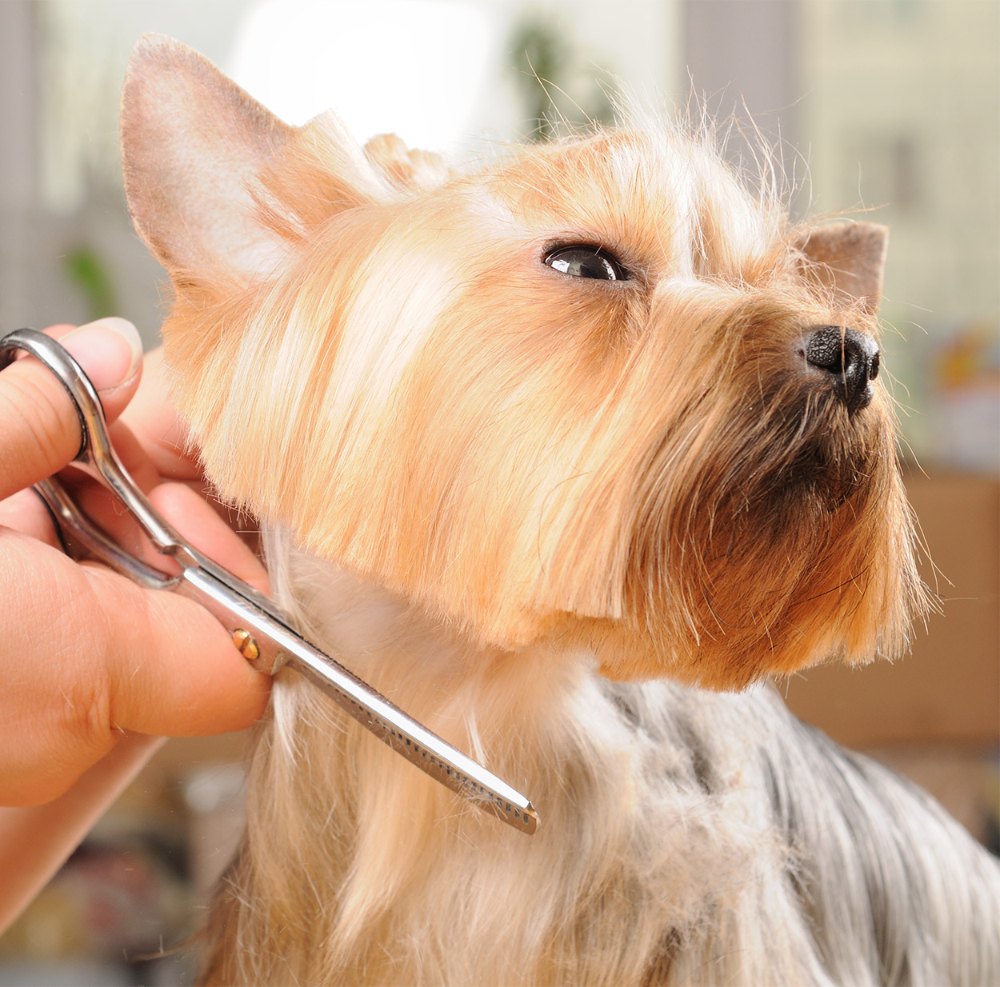
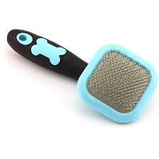

Welcome ! Here you will learn the basics into grooming your Yorkshire Terrier! Yorkshire Terriers coat are similiar to human like hair so shedding is minimal. Yorkies are known for their silky coats. Yorkies need regular brushing and this is an essential part into maintaining their beautiful silky fine-like coat.
GROOMING:
Conditioning your dogs coat is essential. If your Yorkie is experiencing any dryness, utilize a high quality conditioner for your Yorkie to have increased moisture. Allow the conditioner to set for atleast 5 minutes before rinsing off.
BRUSHING YOUR YORKIE:
Utilizing a pin brush is the best type of brush to use on a Yorkshire Terrier with a medium to long coat. Brushing your your yorkie with a longer coat will decrease knotting/matting. Brushing daily will help the yorkies body oils and will help remove any dirt and dead hair. You can also use a conditioning coat spray which will help keep the appearance of the coat shiny.
GENERAL TIPS